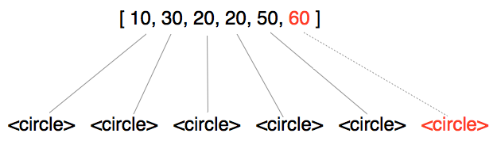
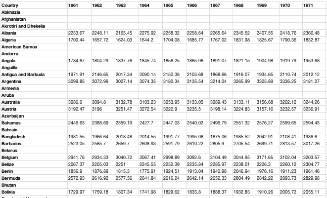
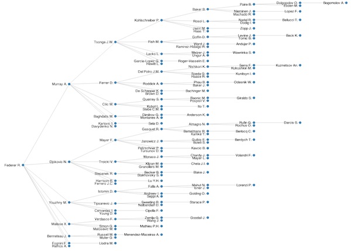

Building Data Visualisations with D3
July 2013
by Peter Cook / @prcweb / www.prcweb.co.uk
Order of play
- What is data visualisation?
- Introducing D3
- Ingredients of a D3 visualisation
- Examples
What is data visualisation?
The graphical representation of information

Data visualisation examples
Introducing D3
D3 is a JavaScript library for manipulating HTML & SVG based on data...
...allowing us to build amazing data visualisations in the browser...
Why D3?
D3 has no bounds on the visualisation type
Imagination is the limit
Wimbledon etc.
Ingredients of a D3 Visualisation
Data
The view (DOM/HTML/SVG)
Data join
Update
Interaction
1. Data
Data acquisition → structured data → visualisation
Data for D3
Arrays
[ 1, 2, 3, 4, 5 ]
[ 'this', 'is', 'my', 'data' ]
[ { 'name': 'Andy', value: 20 },
{ 'name': 'Peter', value: 30 } ]
[ [ 1, 2 ], [ 3, 4 ] ]
Data arrays may contain numbers, strings, arrays & objects
2. The view
Document Object Model (DOM)
HTML
Scalable Vector Graphics (SVG)
CSS
Example HTML & SVG
<!doctype html>
<html lang=en>
<head>
<meta charset="utf-8">
<title>My chart</title>
</head>
<body>
<h1>My chart</h1>
<svg>
<rect x="40" y="140" width="100" height="200"
style="fill: blue;"/>
<rect x="140" y="40" width="100" height="300"
style="fill: red;"/>
</svg>
</body>
</html>
Common SVG elements (1/2)
// A line (defined by start and end points)
<line x1="10" y1="10" x2="100" y2="10">
// A rectangle (defined by top-left point, width and height)
<rect x="10" y="10" width="50" height="100">
// A circle (defined by centre point and radius)
<circle cx="50" cy="50" r="40">
// Text (x,y defines start of baseline)
<text x="10" y="10">My text</text>
Common SVG elements (2/2)
// PATHS
// A square (move to 5,5, move 8 right, 8 down, 8 left then close)
<path d="M5,5 l8,0 l0,8 l-8,0 Z">
// An arc (start at 20,20, draw arc)
// Arc parameters are: x-rad,y-rad x-rot large-arc sweep x2,y2
<path d="M20,20 A20,20 0 0 1 40,40">
Common SVG styling
/* element outlines */
stroke: red; // stroke colour
stroke-width: 1px;
stroke-opacity: 0.8;
/* element insides */
fill: #555;
fill-opacity: 1;
/* text */
fill: #6e722B; // text colour
font-size: 20px;
3. The data join
Joins a data array with DOM elements
e.g. join an array to circle elements

Each data element is stored on the DOM element (__data__)

4. The update
Creation and removal of DOM elements
Update existing DOM elements from the joined-data

5. Interaction
Set-up event handlers on DOM elements

Examples
Bar chart
We will cover:
D3 selections
Selection updates
Data join
Update function(d)
Enter/exit
Update pattern
References
Selections https://github.com/mbostock/d3/wiki/Selections
General update pattern: http://bl.ocks.org/mbostock/3808218
Circle grid
We will cover:
SVG circle element
SVG g element (group)
SVG transform
Updating using function(d, i)
Scale functions
Transitions
References
Scales https://github.com/mbostock/d3/wiki/Scales
Transitions https://github.com/mbostock/d3/wiki/Transitions
Scatter plot

We will cover:
Using real data
Joining array of objects
selection.call()
Axes
Axes labelling
Event handling
References
selection.call() https://github.com/mbostock/d3/wiki/Selections#wiki-call
d3.svg.axis https://github.com/mbostock/d3/wiki/SVG-Axes
Event handling https://github.com/mbostock/d3/wiki/Selections#wiki-on
SVG events http://www.w3.org/TR/SVG/interact.html#UIEvents
Table
We will cover:
Loading CSV data
Nested selections & joins
References
CSV https://github.com/mbostock/d3/wiki/CSV
Nested selections http://bost.ocks.org/mike/nest/
Tree
We will cover:
Tree layout
Interaction
References
Tree layout https://github.com/mbostock/d3/wiki/Tree-Layout